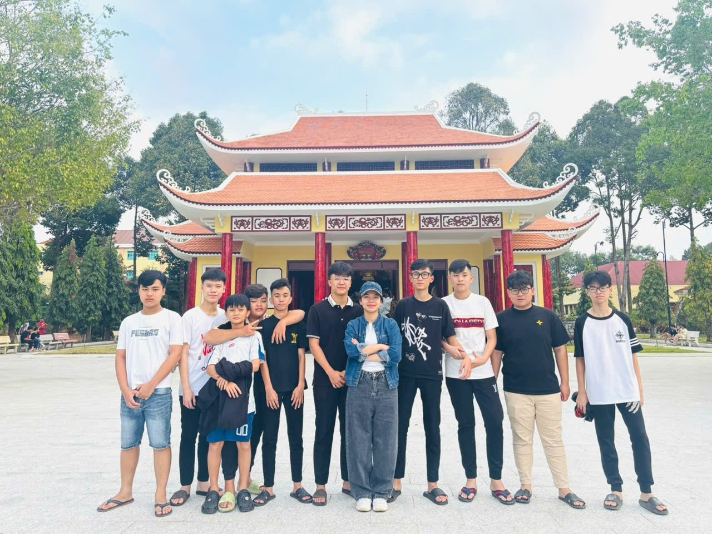
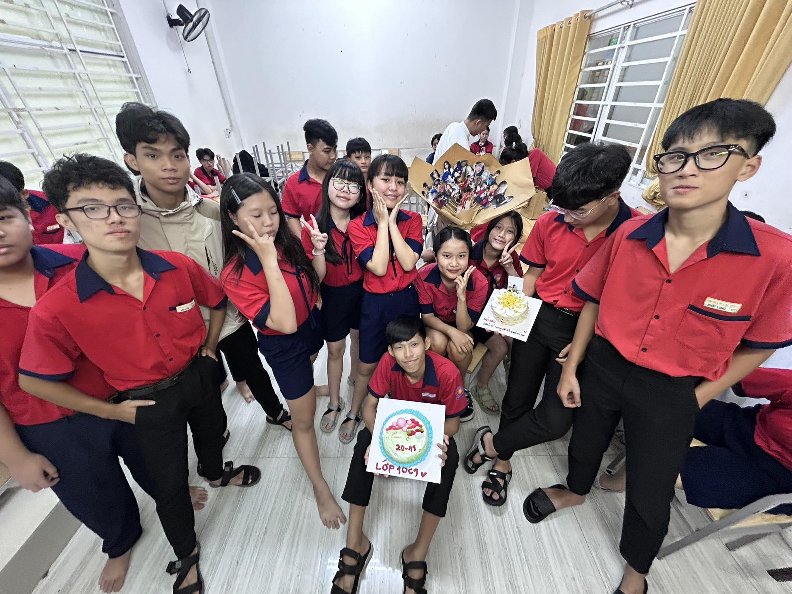
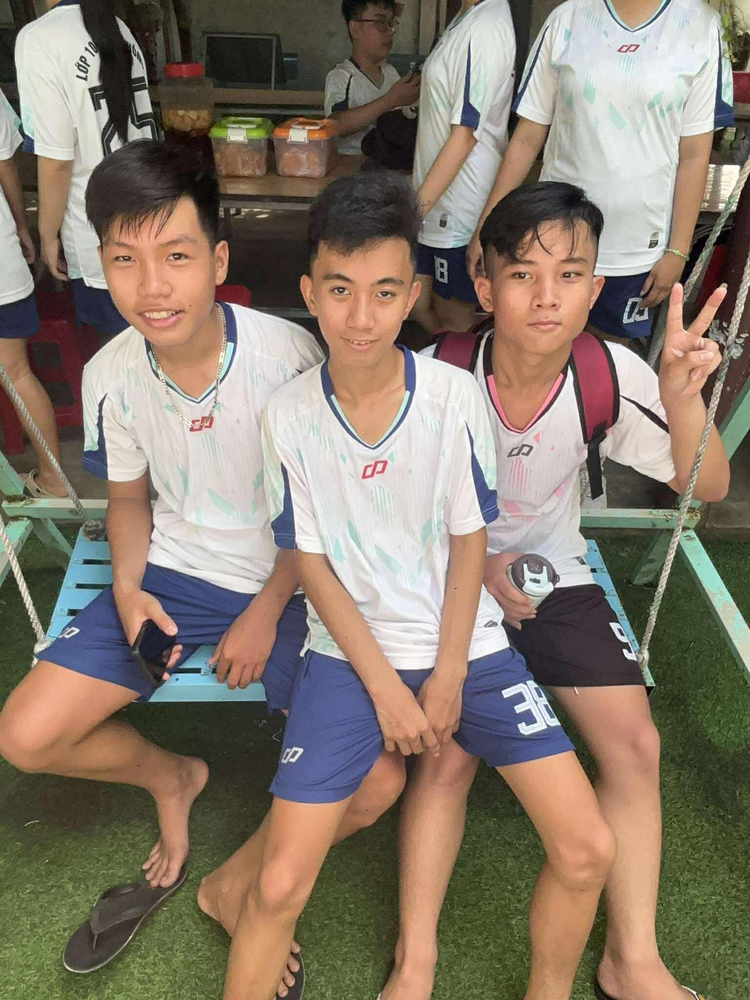

LỚP 10C1
Tập thể đoàn kết – năng động – đầy nhiệt huyết
📌 Ảnh 1: Ảnh chụp tập thể lớp 10C1
Lớp 10C1 là một tập thể học sinh trẻ trung, năng động và luôn giữ tinh thần đoàn kết trong mọi hoạt động. Ngay từ những ngày đầu bước vào mái trường trung học phổ thông, các thành viên trong lớp đã nhanh chóng gắn bó, cùng nhau xây dựng môi trường học tập tích cực và thân thiện.

📌 Ảnh 2: Phòng học hoặc giờ học trên lớp của 10C1
Trong học tập, lớp 10C1 luôn đề cao tinh thần tự giác, chăm chỉ và hỗ trợ lẫn nhau để cùng tiến bộ. Các giờ học diễn ra trong không khí nghiêm túc nhưng không kém phần sôi nổi, giúp mỗi học sinh phát huy tối đa khả năng của mình.
📌 Ảnh 3: Hoạt động ngoại khóa, sinh hoạt tập thể của lớp
Bên cạnh việc học, lớp 10C1 còn tích cực tham gia các hoạt động ngoại khóa, văn nghệ và thể thao. Đây là dịp để các thành viên thư giãn, tăng cường tinh thần gắn kết và lưu giữ những kỷ niệm đẹp.
📌 Ảnh 4: Tham gia phong trào, sự kiện của trường
Với tinh thần nhiệt huyết của tuổi trẻ, lớp 10C1 luôn hăng hái tham gia các phong trào do nhà trường tổ chức. Tập thể lớp không ngừng nỗ lực để đạt được thành tích tốt, góp phần xây dựng hình ảnh một lớp học gương mẫu và đoàn kết.
📌 Ảnh 5: Khoảnh khắc đáng nhớ hoặc ảnh kỷ niệm của lớp
Những năm tháng học tập dưới mái trường sẽ trở thành hành trang quý giá trong ký ức của mỗi thành viên lớp 10C1. Tập thể lớp luôn quyết tâm cùng nhau học tập, rèn luyện và hướng tới một tương lai tốt đẹp hơn.